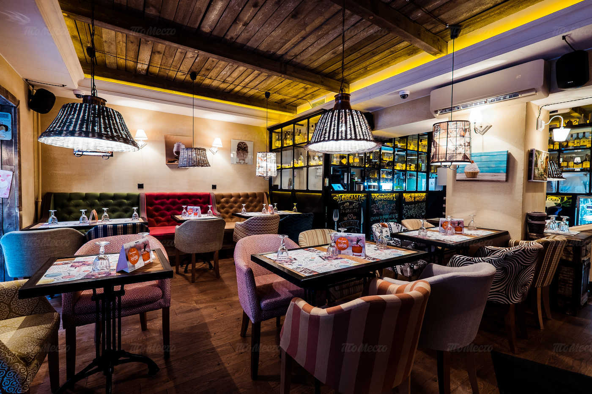

О кофейне
Мы работаем с одними из лучших обжарщиков зеленого зерна speciality класса в России компанией - OWL COFFEE..
Мы используем профессиональное оборудование для приготовления эспрессо и кофейных напитков - La Marzocco, Anfim, Diting - это малая часть того, на чем мы готовим
Профессиональные бариста, прошедшие квалифицированное обучение, которые всегда готовы рассказать и приготовить для Вас Кофе без Ошибок